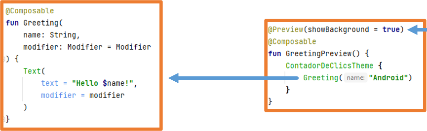
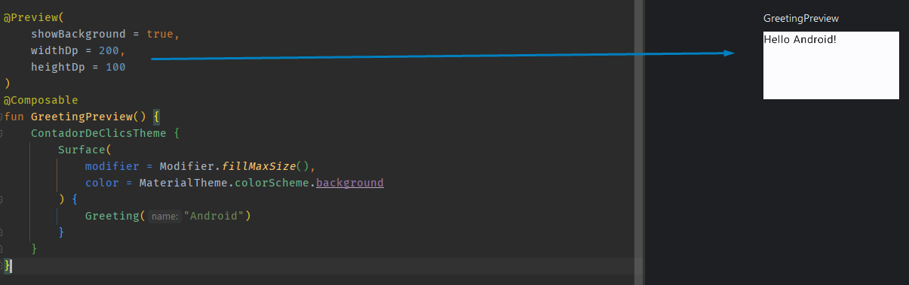
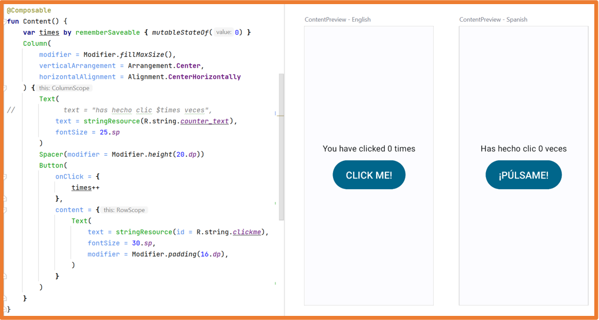
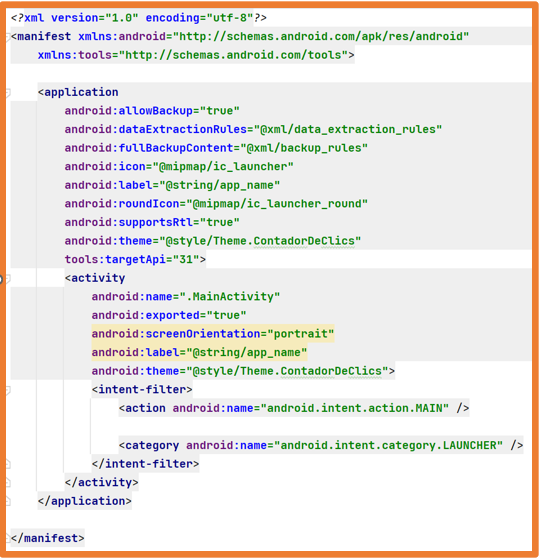

La experiencia de usuario en aplicaciones móviles y en aplicaciones de escritorio es muy diferente.
En una aplicación móvil, la interacción del usuario no siempre comienza en el mismo punto.
Por ejemplo:
Si se abre la aplicación de correo, lo más habitual es que se muestre la bandeja de entrada o la última ventana abierta en la aplicación.
Si estás navegando una página web y pulsas el botón de contacto para enviar un correo,
es probable que la aplicación de correo se abra directamente para redactar el mensaje.
En las aplicaciones de escritorio, el punto de inicio de la aplicación es el método main, que incluye el código que se ejecuta cuando la aplicación arranca.
En las aplicaciones móviles no se puede hacer de la misma forma porque una aplicación puede iniciarse en distintos puntos dentro de ella, como se ha visto anteriormente.
Por eso el ciclo de vida de las aplicaciones móviles es diferente al de las aplicaciones de escritorio.
Actividades
La clase Activity es un componente crucial en una aplicación Android.
En Android, cada pantalla de la aplicación se define dentro de una Activity.
Una Activity es el punto de entrada para la interacción del usuario con la aplicación.
En Android, el código que inicia una Activity corresponde a una llamada a método, que está relacionada con una de las etapas específicas del ciclo de vida de la Activity.
A medida que el usuario navega, sale y vuelve a la aplicación, las distintas Activities de la aplicación pasan por varios estados en su ciclo de vida (lifecycle).
La clase Activity proporciona una serie de funciones callback que notifican a la activity cuando cambia su estado:
onCreate()
onStart()
onResume()
onPause()
onStop()
onDestroy()
El sistema invoca cada uno de estos callbacks cuando una activity cambia de estado en su ciclo de vida (lifecycle).
Usando los callbacks del ciclo de vida, puedes definir cómo se comporta la activity cuando el usuario la abandona y vuelve a ella.
Por ejemplo:
Si estás creando un reproductor de vídeo en streaming, puedes indicar que el vídeo se pause y que la conexión de red se cierre si el usuario cambia a otra aplicación.
Cuando el usuario regrese a la activity, la conexión puede restablecerse y la reproducción reanudarse.
Programación imperativa vs declarativa
El lenguaje de programación Kotlin incluye características que lo acercan a la programación declarativa.
Ejemplo: recorrer un array y transformarlo en otro
Java: se utiliza un bucle for para recorrer todos los elementos, especificando cómo se transforma cada elemento y, finalmente, almacenándolo en el array resultante.
Aunque desde hace algunas versiones también se permite programación funcional en Java
Kotlin: se usa la función map, que mapea una lista a otra sin especificar explícitamente si crear una lista nueva, añadir elementos o definir el orden.
Aplicaciones nativas en Android
Hoy en día existen dos opciones para desarrollar aplicaciones nativas en Android:
Método tradicional con Views: programación imperativa.
La interfaz gráfica se define en archivos XML, especificando los elementos gráficos (Views), y en el código del programa se describen explícitamente todas las acciones.
Los elementos gráficos (UI declarativa) y su funcionalidad (programación imperativa) se definen directamente en el código del programa.
Una de las principales ventajas de las interfaces de usuario declarativas es que los elementos de la interfaz están vinculados al estado de la Activity.
Así, si cambia un elemento de la interfaz, cambia el estado y la interfaz se vuelve a dibujar automáticamente para reflejar el nuevo estado.
Este proceso ocurre automáticamente sin necesidad de instrucciones adicionales por parte del desarrollador.
El sistema está muy optimizado y solo vuelve a dibujar las partes afectadas por el cambio de estado.
Ventajas de usar interfaces declarativas:
Menos código.
Código más simple y fácil de leer.
Evita clases intermedias que pueden introducir errores.
Intuitivo.
Manejo automático de cambios en la vista vinculados al estado de la aplicación.
Muy rápido.
Capacidades de vista previa para cualquier componente.
Altamente potente.
Frameworks como React Native, Flutter o
Swift UI usan el paradigma de interfaz declarativa.
Este curso se centrará en Jetpack Compose, ya que representa la tendencia actual del mercado.
En el desarrollo nativo para Android, es posible combinar el método tradicional basado en XML con Jetpack Compose.
Jetpack Compose
Jetpack Compose es un conjunto de herramientas para construir y diseñar interfaces de usuario declarativas para Android.
Está 100% basado en Kotlin.
Se introdujo a partir de la versión Arctic Fox (2021) de Android Studio.
Las aplicaciones desarrolladas con Jetpack Compose pueden ejecutarse en Android 5.0 (API 21) y versiones posteriores.
Jetpack Compose está disponible únicamente para Android.
Está compuesto por:
Compilador: un plugin de Gradle que genera el código necesario.
Runtime: un entorno de ejecución que crea y mantiene el árbol de nodos para hacer seguimiento de los elementos de la interfaz.
Biblioteca UI: decide cómo se interpreta y renderiza el árbol de nodos.
Tanto el compilador como el runtime están "fijados" y funcionan de forma genérica.
La biblioteca UI es un componente que puede cambiar,
y actualmente la única versión estable es Jetpack Compose para Android.
JetBrains está desarrollando librerías para:
Compose para Desktop (Windows, Mac y Linux)
Compose para Web (experimental)
Compose para iOS (alpha)
Todo esto se agrupa junto con Jetpack Compose en el proyecto Compose Multiplatform, permitiendo generar ejecutables para Android, iOS, escritorio y web, similar a Flutter.
Desarrollo Android con Jetpack Compose
Usar Jetpack Compose implica definir de forma declarativa la interfaz gráfica de la aplicación.
Para definir la interfaz gráfica, los desarrolladores utilizan componentes de Jetpack Compose, que pueden ser del sistema o personalizados.
Un componente de Jetpack Compose puede contener a otro componente de Jetpack Compose.
Este comportamiento se usa con frecuencia para crear componentes personalizados que extienden la funcionalidad de los existentes.
Si es necesario, también se puede usar programación imperativa: variables, clases, estructuras de control, funciones, etc.
Crear un proyecto en Android
La mejor forma de entender cómo funciona Android Studio es creando una aplicación sencilla que utilice algunos de sus componentes y funcionalidades.
Esta unidad consistirá en explicar conceptos mientras se crea una aplicación.
Algunos conceptos tratados aquí se explicarán con más detalle en unidades posteriores.
La aplicación que crearemos será un contador de clics como el que se muestra en la imagen.
Contador de clics
Una vez abierto Android Studio, hay varias opciones para crear un proyecto:
Si no hay ningún proyecto abierto: haz clic en New Project.
New project
Si ya hay un proyecto abierto, hay dos opciones:
Cerrar el proyecto y luego hacer clic en New Project.
Crear un nuevo proyecto directamente.
Crear un proyecto desde un sistema de control de versiones (VCS): introduce la URL del repositorio.
Al crear el proyecto, Android Studio muestra una ventana con todas las plantillas disponibles.
Debes elegir Phone and Tablet y luego Empty Activity (usa Jetpack Compose).
Las plantillas que incluyen la palabra "Views" en su nombre usan el método tradicional basado en XML.
A continuación, completa las opciones del proyecto:
Name: debe ser significativo.
Package: debe ser único. Para asegurarlo y durante este curso, usaremos la siguiente estructura:
com.XXYYZZ.nombreproyecto, donde XX son las dos primeras letras de tu nombre, YY las dos primeras de tu primer apellido y ZZ las dos primeras de tu segundo apellido.
Save location: el directorio donde quieres guardar el proyecto.
Minimum SDK: API 26 ("Oreo"; Android 8.0).
Elegir el SDK mínimo es un paso crucial al iniciar un proyecto.
Versión más baja posible -> soporta mayor número de dispositivos.
Versión más alta -> acceso a todas las funcionalidades.
En todas las actividades del curso (cuando sea posible) seleccionaremos API 26 (alcance 95.4%).
Aunque API 28 (89.6%) o API 29 (81.2%) también podrían elegirse sin problema, hoy en día hay pocos dispositivos por debajo de esas versiones.
Una vez seleccionadas todas las opciones, haz clic en Finish.
En este punto, Android Studio comenzará a crear el proyecto.
Durante el proceso de creación del proyecto, Android Studio descargará todos los componentes necesarios.
Se recomienda no interactuar con el programa hasta que la creación del proyecto haya finalizado por completo.
Puedes comprobar el progreso de descarga y creación del proyecto en la esquina inferior derecha.
Estructura de un proyecto en Android
Una vez creado el proyecto, puedes ver todos sus archivos. Dependiendo de la vista seleccionada (Project, Android, etc.), los archivos pueden aparecer en ubicaciones distintas. A continuación se explican los más importantes.
Vista Project -> app/src/main/AndroidManifest.xml
Vista Android -> manifests/AndroidManifest.xml
Este archivo describe las características fundamentales de la aplicación y sus componentes. Especifica las Activities (pantallas) incluidas en la aplicación y los permisos requeridos por estas Activities, como cámara, contactos, internet, etc.
Archivos: build.gradle
Android Studio usa Gradle para compilar y construir la aplicación.
Hay un archivo build.gradle para todo el proyecto y otro build.gradle para cada módulo del proyecto.
Generalmente, el archivo build.gradle del módulo app es el más relevante.
Este archivo contiene las dependencias de compilación de la aplicación y las configuraciones por defecto.
Vista Project -> app/build.gradle
Vista Android -> Gradle Scripts/build.gradle.kts (Module: app)
Archivo: build.gradle.kts (Module: app)
compiledSdk -> Versión usada para compilar. Por defecto, es la última SDK instalada en el equipo.
applicationId -> Nombre completo del paquete de la aplicación.
minSdk -> Versión mínima de SDK especificada al crear el proyecto. Será la versión más antigua compatible con la aplicación.
targetSdk -> La versión más alta con la que se prueba la aplicación.
dependencies -> Sección donde se añaden las dependencias requeridas por la aplicación.
Archivo: MainActivity.kt
Vista Project -> app/src/main/java/com.catata.contadordeclics/MainActivity.kt
Vista Android -> java/com.catata.contadordeclics/MainActivity.kt
En este archivo se programa el comportamiento de esa pantalla.
Por defecto, contiene:
La definición de la Activity principal y su método onCreate. Debido al ciclo de vida de las Activities, el código en onCreate se ejecutará cuando la Activity alcance ese estado.
Un componente de Jetpack Compose con texto (Text).
Un componente de Jetpack Compose con vista previa (@Preview).
Carpeta: ui/theme
Vista Project -> app/src/main/java/com.catata.contadordeclics/ui.theme
Vista Android -> java/com.catata.contadordeclics/ui.theme
Este directorio contiene archivos que configuran el tema usado por la aplicación.
Por defecto, Jetpack Compose usa un tema basado en Material Design (la guía de diseño de Google).
Estos archivos en la carpeta ui.theme permiten ampliar ese tema.
Carpeta: res
Vista Project -> app/src/main/res
Vista Android -> res
Este directorio contiene los recursos de la aplicación.
Carpeta: drawable
Vista Project -> app/src/main/res/drawable
Vista Android -> res/drawable
Directorio donde se almacenan las imágenes de la aplicación.
Carpeta: mipmap
Vista Project -> app/src/main/res/midmap-RESOLUTION
Directorios que contienen el icono de la aplicación para diferentes densidades de píxeles de pantalla.
Vista Android -> res/mipmap
En la vista Android, los archivos se agrupan por nombre. La RESOLUTION en la que se usan se muestra junto al nombre.
Nomenclatura de RESOLUCION en Android:
xxxhdpi -> 640 dpi
xxhdpi -> 480 dpi
xhdpi -> 320 dpi
hdpi -> 240 dpi
mdpi -> 160 dpi
Unidades de medida en Android
Al desarrollar aplicaciones Android es esencial entender las unidades de medida disponibles.
Android soporta las siguientes unidades:
dp -> density-independent pixels (píxeles independientes de densidad)
sp -> scale-independent pixels (píxeles independientes de escala, para texto)
in -> pulgadas
mm -> milímetros
pt -> puntos (1 pt = 1/72 de pulgada)
px -> píxeles reales
dp (density-independent pixels):
1 dp equivale a 1 píxel en una pantalla de 160 dpi. Es una unidad flexible que se adapta según la densidad de la pantalla:
dp = (width in pixels * 160) / screen density
Es la unidad recomendada para la mayoría de tamaños y márgenes, excepto para texto.
sp (scale-independent pixels):
Similar a dp, pero además escala con la preferencia de tamaño de letra del usuario. Usar sp para tamaños de fuente.
in / mm / pt:
Unidades basadas en el tamaño físico de la pantalla (pulgadas, milímetros y puntos).
px (píxeles):
Corresponde a un píxel físico de la pantalla. Su uso no es recomendable para diseño adaptable, ya que los dispositivos tienen distintas densidades (ppi).
Primera aplicación Android: Contador de clics
El contenido inicial de un proyecto con Jetpack Compose es el siguiente:
Extiende ComponentActivity, que es una Activity que soporta componentes de Jetpack Compose.
Contiene el método onCreate, que se ejecuta cuando la aplicación arranca.
Dentro de onCreate se carga el tema del proyecto y, dentro de él, se llama al componente Scaffold, que a su vez invoca a la función Greeting.
Función Greeting:
Acepta un String y un Modifier y genera un componente de Jetpack Compose Text.
Esta función es un componente de Jetpack Compose porque está anotada con @Composable.
Función GreetingPreview:
Carga el tema del proyecto y llama dentro de él a la función Greeting.
Es un componente de Jetpack Compose porque está anotada con @Composable.
Permite previsualizar su contenido porque además está anotada con @Preview.
En el código se pueden ver los siguientes componentes de Jetpack Compose:
Scaffold: Componente del sistema basado en Material Design que permite definir elevación, fondo, etc.
Text: Componente del sistema para mostrar texto.
ClickCounterTheme: Componente personalizado creado con el proyecto que extiende el tema por defecto de Material Design. Definido en el archivo ui.theme/Theme.kt.
Greeting: Componente personalizado que extiende la funcionalidad del componente Text.
GreetingPreview: Componente personalizado para previsualizar el componente Greeting.
@Composable
Todos los componentes de Jetpack Compose, tanto los del sistema como los personalizados, son funciones que deben estar anotadas con @Composable.
Android Studio permite ver una previsualización en tiempo real de los componentes que se definan, para ello se debe etiquetar un componente con @Preview
como ocurre con la función GreetingPreview.
No se pueden previsualizar componentes que reciben funciones, para solucionar esto se crean componentes que envuelvan a esos que reciben funciones.

Es muy importante que la previsualización muestre lo mismo que se mostrará en la ejecución de la aplicación por eso se puede realizar el siguiente cambio:
Para poder ver las previsualizaciones en Android Studio se debe seleccionar la opción Split en la parte superior derecha.
La primera vez que se quiere previsualizar un componente y cuando hay cambios grandes o errores en el build se deberá pulsar en Build & Refresh…
Opciones
Pulsando la tecla CONTROL y haciendo clic sobre @Preview se pueden ver todas las opciones disponibles:
annotation class Preview(
val name: String = "",
val group: String = "",
@IntRange(from = 1) val apiLevel: Int = -1,
// TODO(mount): Make this Dp when they are inline classes
val widthDp: Int = -1,
// TODO(mount): Make this Dp when they are inline classes
val heightDp: Int = -1,
val locale: String = "",
@FloatRange(from = 0.01) val fontScale: Float = 1f,
val showSystemUi: Boolean = false,
val showBackground: Boolean = false,
val backgroundColor: Long = 0,
@UiMode val uiMode: Int = 0,
@Device val device: String = Devices.DEFAULT,
@Wallpaper val wallpaper: Int = Wallpapers.NONE,
)
Por ejemplo, se puede indicar un tamaño a la previsualización:

Se puede ver el componente dentro de la interfaz del sistema o incluso indicar un dispositivo concreto:
Se pueden crear varias previsualizaciones para un componente:
Esto tiene especial utilidad para mostrar los modos claro y oscuro.
Dos visualizaciones
También pueden haber varios componentes con previsualización:
Las previsualizaciones también permiten ver cómo quedan los componentes cuando se está desarrollando una aplicación multi idioma:
Limitaciones
Las previsualizaciones tienen una serie de limitaciones:
No pueden recibir parámetros.
No tienen acceso a los archivos.
No tienen acceso a la red (no cargarán datos de internet).
Algunas API no funcionan completamente bien.
En la documentación oficial está toda la información sobre @Preview.
Live Edit
Para que los cambios se actualicen automáticamente en el emulador, configura la opción Live Edit de Android Studio.
File -> Settings (CONTROL+ALT+S)
Contenido de la aplicación
La aplicación Contador de clics necesita un texto y un botón así que se va a modificar el código para que lo incluya.
Lo primero será eliminar la función Greeting y todas sus llamadas.
También se cambiará el nombre de la preview GrettingPreview por el nombre ContentPreview.
A continuación, se creará un componente Jetpack Compose llamado Content.
Si no te reconoce algún componente, lo puedes importar con ALT+ENTER.
Recuerda que los componentes de Jetpack Compose se importan desde el paquete androidx.compose.
Como se estudió en la unidad anterior, en Kotlin si el último parámetro es una función lambda, se puede extraer ese parámetro fuera de los paréntesis.
Aunque las dos maneras funcionan igual, en Jetpack Compose si el último parámetro es una función lambda se extrae fuera de los paréntesis.
Para poder previsualizar la interfaz gráfica y ver la interfaz gráfica en el emulador se deben añadir llamadas a la función
Content tanto en onCreate como en ContentPreview.
Si se ejecuta en el emulador la aplicación, aunque se puede comprobar que el botón funciona, no se actualiza el número de veces.
Esto es debido a que como se indicó anteriormente los elementos de la interfaz se conectan al estado de la Activity y si el estado de la Activity no se actualiza la interfaz no se vuelve a pintar.
Para solucionar esto se debe cambiar la variable para que sea una variable de estado de esta manera cuando esta variable cambie el estado de la Activity también lo hará y se volverá a pintar la interfaz.
Con este cambio se puede ejecutar la aplicación y comprobar que la aplicación funciona.
Al principio de la unidad se explicó que hay en situaciones en las que la Activity se destruye y se vuelve a crear, por ejemplo, al cambiar la orientación del dispositivo.
Cuando esto ocurre se ejecuta la Activity desde el principio por lo que las variables se vuelven a crear.
Si se cambia la orientación en la aplicación se observará que el número de clics se pierde.
Para solucionar este comportamiento se debe cambiar la declaración de la variable para que se guarde aunque se destruya la Activity.
Con este cambio se puede ejecutar la aplicación y comprobar que la aplicación funciona correctamente aunque se cambie de orientación,
de modo claro/oscuro o incluso la configuración del dispositivo.
En la aplicación Contador de clics se tiene la necesidad de centralizar la siguiente cadena:
Esta cadena utiliza una variable por lo que a la hora de centralizar dicha cadena se debe pasar ese valor como parámetro.
El formato para declarar parámetros es %NºParámetro$Tipo,
siendo los tipos de parámetros: s (cadenas), d (números).
Por ejemplo, si se quieren recibir varios parámetros:
En las últimas versiones de Android Studio se puede indicar siempre que el tipo de dato es s (cadena) ya que Android Studio
se encarga de convertir automáticamente el dato a String.
Android Studio ayuda a crear estos valores centralizados.
Con el cursor encima de la string hardcoded se muestra la ayuda contextual con clic derecho o con ALT+INTRO y
se selecciona la opción Extract string resource:
Si se tienen varios archivos strings.xml se puede marcar que se añada el valor a todos los archivos y una vez se añada solo habrá que traducir el valor en cada archivo.
Si la cadena tiene varios parámetros Android Studio los reconocerá:
Cadena con parámetros
Ahora desde Kotlin en la función stringResources se podrán pasar esos parámetros:
Text(
text = stringResource(
id = R.string.counter_text, //Recurso
times), //Primer parámetro, añadimos una variable
fontSize = 25.sp
)
La traducción de aplicaciones tiene un gran inconveniente ya que la misma frase no tiene la misma longitud en todos los idiomas.
Se debe realizar un buen estudio de la aplicación y de los diferentes idiomas para que la aplicación se muestre de manera similar en todos los idiomas en los que se distribuya.
Aplicación Multi idioma
Crear aplicaciones multiidioma con Android Studio es muy sencillo,
simplemente se debe crear un archivo strings.xml para cada idioma soportado.
Si solo se tiene un archivo strings.xml como ocurre nada más crear el proyecto,
ese archivo se cargará sea cual sea el idioma configurado en el dispositivo.
Si el dispositivo tiene un idioma configurado
y no existe archivo strings.xml para ese idioma se cargará el archivo strings.xml
por defecto (el que se crea junto al proyecto).
Si el dispositivo tiene uno o más idiomas configurados y hay archivos strings.xml para esos idiomas,
se cargará el primero de la lista de la configuración del móvil.
Si se tienen varios archivos strings.xml y en uno no aparece una de las cadenas traducidas,
se cargará la cadena en el idioma por defecto
Lo más habitual es que el archivo strings.xml creado con el proyecto sea para el idioma inglés.
Para crear un archivo strings.xml para un idioma se deben seguir los siguientes pasos:
Clic derecho sobre la carpeta values -> New -> Values Resource File
En el inspector del proyecto se puede ver cómo se ha creado un segundo archivo para centralizar cadenas:
Varios strings de idiomas
El siguiente paso es replicar el contenido del primer archivo strings.xml al segundo y traducir el valor de las cadenas:
Replicando texto
Mediante el editor de idiomas también se pueden añadir cadenas para los diferentes idiomas e incluso añadir nuevos archivos strings.xml:
String Editor
En el editor aparecen tantas columnas como archivos strings.xml haya:
En el momento en el que se tienen diferentes archivos strings.xml para diferentes idiomas,
al añadir una cadena a uno de los archivos Android Studio avisará que se debe traducir a los otros idiomas.
Aviso de Android Studio para traducir cadena
Si una cadena no se traduce a algún idioma Android Studio mostrará la cadena definida en el archivo strings.xml por defecto.
El resultado se puede ver con las previsualizaciones @Preview:
 Previsualizaciones
Y también se puede comprobar con el emulador:
Cambiado de idioma
Orientaciones vertical y horizontal
En los dispositivos fijos como televisiones o automóviles no tiene sentido cambiar la orientación,
de hecho directamente no disponen del acelerómetro para detectarla.
La mayoría de dispositivos móviles Android (móviles y táblets) permiten cambiar la orientación de la pantalla entre vertical y horizontal.
Existen excepciones como los smartWatch que siendo móviles generalmente solo tienen una orientación.
Si se desarrolla una aplicación para móvil o táblet es importante tener en cuenta el diseño en las dos orientaciones.
Gracias al uso de Jetpack Compose los componentes se van a situar ocupando la pantalla tal y como se definan.
Por esta razón, en principio todas las aplicaciones se visualizarán correctamente indistintamente del tamaño y la orientación de la pantalla.
Más adelante se verá cómo mostrar diferentes componentes o los mismos componentes con diferente estilo según el tamaño de pantalla para crear una mejor experiencia de usuario.
Es posible que se quiera diseñar una aplicación que no permita cambiar la orientación.
Para ello en el archivo AndroidManifest.xml se debe añadir la siguiente propiedad a la Activity:
android:screenOrientation="ORIENTACIÓN"
 Android Manifest. Orientación
Esta configuración se debe hacer para todas las Activities de la aplicación en las que se quiera bloquear la orientación.
Archivos de recursos (values)
Hasta ahora se han usado archivos de recursos con valores como strings.xml, colors.xml y dimens.xml
para centralizar valores.
Estos archivos también pueden usarse para cargar valores específicos según la configuración del dispositivo.
Por ejemplo, se puede cargar un archivo colors.xml cuando la orientación es vertical (portrait) y otro distinto para horizontal (landscape),
de forma similar a cómo strings.xml se comporta para distintos idiomas.
Con el método tradicional de interfaces definido por XML, esta configuración tenía mucho más sentido.
A continuación se muestra cómo crear estos archivos:
Haz clic derecho en la carpeta values y selecciona Values Resource File.
Creación de archivos de recursos
El comportamiento de estos archivos es idéntico al de strings.xml.
El archivo se creará en una carpeta que Android cargará automáticamente según la configuración del dispositivo.
Depuración
Android Studio incluye un modo de depuración que funciona como la mayoría de los IDEs: permite establecer puntos de interrupción, ejecutar en modo debug y avanzar paso a paso por el código.
Para comprobaciones más sencillas puedes usar la clase Log como se muestra a continuación:
Log.i("TAG", "MENSAJE")
El mensaje aparecerá en la sección Logcat de Android Studio.
El software Android Studio recibe actualizaciones que pueden afectar a distintos componentes:
El propio Android Studio.
Android SDK.
JDK.
Plugins.
Gradle.
Dependencias.
Ocasionalmente, tras una actualización, algunos proyectos pueden dejar de funcionar hasta que se configuren correctamente.
La forma en que se muestran los errores depende del tipo de actualización que los haya provocado.
Visualización de errores
Según el tipo de error, las soluciones variarán.
Error de versión de Java:
Para resolver un error de versión de Java, ve a: File -> Settings (CTRL+ALT+S)
Selecciona la versión de JDK correcta.
Selección del JDK correcto
Error de appcompat:
En aplicaciones diseñadas con XML se usa la librería appcompat.
Si desarrollas una aplicación que mezcla XML y Jetpack Compose, por ejemplo durante una migración, también se utiliza esta librería.
En ocasiones, tras actualizaciones, puede ser necesario actualizar la versión de la dependencia. Esto se configura en el archivo build.gradle (Module: app):
Dependencias en Gradle
Ejercicios
Convertidor Decimal-Binario-Hexadecimal
Crea una aplicación donde al pulsar un botón se genere un entero aleatorio. Una vez pulsado, el botón se convertirá en otro botón para borrar todo y reiniciar.
Cuando se genere el entero, se habilitarán dos botones: uno para convertir el número a binario y otro para convertirlo a hexadecimal. Usa un color distinto para cada botón.
Ejemplo: Aplicación Convertidor
Aquí tienes una posible solución. Es solo una guía; procura intentarlo tú primero.
Estadísticas
Crea una aplicación que lleve estadísticas de acceso a una calle, contando personas a pie, patinetes, bicicletas y coches.
Debe parecerse al ejemplo mostrado.
Ejemplo: Aplicación de Estadísticas
La aplicación tendrá un contador para cada tipo, un botón para incrementar en 1, un botón para decrementar en 1 y un botón de reinicio para cada contador.
También habrá un contador global que sume todos los contadores y un botón general para reiniciar todo.
En la parte inferior se mostrará el porcentaje correspondiente a cada tipo de vehículo.
Los botones de decrementar y reiniciar permanecerán deshabilitados mientras su contador sea 0 (usa la propiedad enabled).
Para alinear elementos en vertical usa Column; para alinearlos en horizontal usa Row.
Ejemplo: Aplicación de Estadísticas
Aquí tienes una posible solución. Es solo una guía; procura intentarlo tú primero.
Práctica 4: Controlador de puntos de tenis
Crea una aplicación en Android Studio para llevar la puntuación de un partido de tenis compuesto por 3 sets.
Cada set se compone de juegos, y cada juego se compone de puntos.
Cada punto en un juego incrementa la puntuación. Por ejemplo, si un jugador tiene 0 y gana un punto pasa a 15; el siguiente punto pasa a 30, luego a 40 y finalmente otro punto gana el juego, siempre que el oponente tenga 30 puntos o menos. Si ambos llegan a 40 es deuce.
Si un jugador marca estando en ventaja gana el juego; si el oponente marca vuelve a deuce. Desde deuce hay que marcar dos puntos consecutivos para ganar el juego.
Cada set consiste en juegos. Un jugador gana el set al llegar a 6 juegos con 2 de ventaja (por ejemplo 6-4). También puede ganar 7-5. Si llegan a 6-6 se juega un tie break, que puntúa de uno en uno y se gana al llegar a 7 con 2 puntos de ventaja.
La aplicación tendrá un botón por cada jugador para incrementar sus puntos en el juego actual. Si un punto decide el juego, se incrementará el contador de juegos; si un set termina y decide el partido, se mostrará que el partido ha finalizado.
Habrá un botón de reinicio para todo el partido.
Consideraciones:
La aplicación deberá soportar inglés y español.
La app solo funcionará en modo vertical (portrait).
Gestión centralizada de colores: un color por equipo, uno para sets, otro para juegos y otro para puntos.
Si hay tie-break debe resaltarse visualmente.
El código deberá estar comentado y bien formateado.